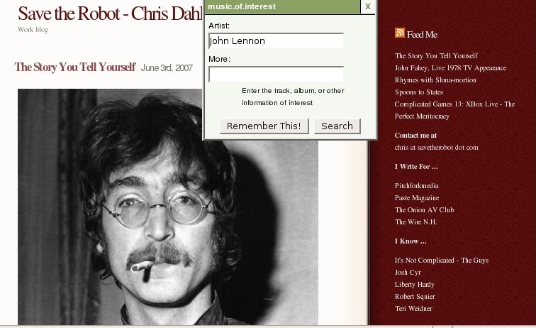
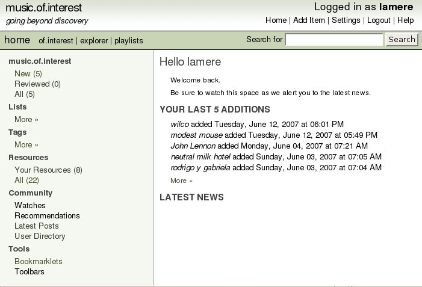

what should I listen to next?
This happens to me all the time. I read a blog entry about a
new band. I want to check them out later - to listen to,
perhaps to see if they are listed on eMusic, or perhaps to see if they
are touring - but with my 48-year-old neurons - when I finally do have a
few minutes, I can't even remember that there was a new band that I
wanted to check out.
That's where music.of.interest comes in. music.of.interest gives you a tiny bookmarklet to put in your bookmark toolbar. When you click on the bookmarklet, it brings up a tiny window where you can type in the name of the band that you want to remember for later.

This just adds the artist to your list of music.of.interest artists. The next time you are ready for some music exploration, you can just pop over to the music.of.interest site. There you'll see your list of artists, along with lots of tools for exploring these artists.

With m.o.i you can easily look up info about the artist at the usual places like Wikipedia, AllMusic, Last.fm, Flickr, eMusic, the hype machine and Pandora. You can tag bands, add them to your eMusic 'To Buy' list.
music.of.interest - is quite fresh - I could still smell the paint drying. The community of users has grown to about 12 right now, and there are a few unimplemented features. The main missing feature is that you can't listen to any music on the site. You can read bios, find videos and photos, but if you are exploring for music, you really need to be able to listen to the band too. Craig Huizenga, author of m.o.i says in his blog: Hopefully soon you will start to see artist and album information on the site - I’m going to source the base data from the excellent Music Brainz database, and then try and tie that over to the Rhapsody. After that, it’s tracks and playlists ...
m.o.i - is a well designed, clean site - written in Rails - it doesn't overwhelm with ajax, intuitive to use ... but is clearly still in development - there are planned features that are just not implemented yet.
I've added the m.o.i bookmarklet to the very precious
real-estate that is my bookmark toolbar (right next to the javadoc for
the jdk). I'm looking forward to seeing all of the things
Craig is planning to do with the site.
Posted by Jim Bowen on June 13, 2007 at 06:50 AM EDT #
Posted by Zac Johnson on June 14, 2007 at 09:08 AM EDT #
Posted by Craig Huizenga on June 15, 2007 at 12:45 AM EDT #